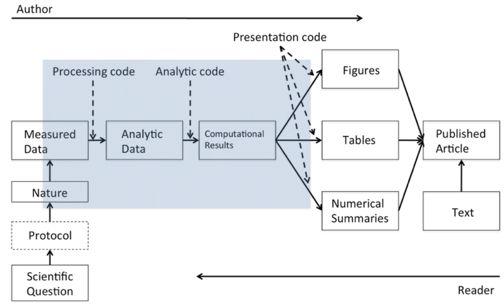

install.packages(c("here", "sessioninfo"))This lecture, as the rest of the course, is adapted from the version Stephanie C. Hicks designed and maintained in 2021 and 2022. Check the recent changes to this file through the GitHub history.
An article about computational results is advertising, not scholarship. The actual scholarship is the full software environment, code and data, that produced the result. —Claerbout and Karrenbach (1992)
[Link to Claerbout and Karrenbach (1992) article]
Pre-lecture materials
Read ahead
Read ahead
Before class, you can prepare by reading the following materials:
- Statistical programming, Small mistakes, big impacts by Simon Schwab and Leonhard Held
- Reproducible Research: A Retrospective by Roger Peng and Stephanie Hicks
Acknowledgements
Material for this lecture was borrowed and adopted from
- https://ropensci.github.io/reproducibility-guide/sections/introduction
- https://rdpeng.github.io/Biostat776
- Reproducible Research: A Retrospective by Roger Peng and Stephanie Hicks
Learning objectives
Learning objectives
At the end of this lesson you will:
- Know the difference between replication and reproducibility
- Identify valid reasons why replication and/or reproducibility is not always possible
- Identify the type of reproducibility
- Identify key components to enable reproducible data analyses
Introduction
This lecture will be about reproducible reporting, and I want to take the opportunity to cover some basic concepts and ideas that are related to reproducible reporting, just in case you have not heard about it or don not know what it is.
Before we get to reproducibility, we need to cover a little background with respect to how science works (even if you are not a scientist, this is important).
The ultimate standard in strengthening scientific evidence is replication. Assume you claim that X causes Y, or that Vitamin C improves disease. The goal of replication is to have independent people to do independent things with different data, different methods, and different laboratories and see if they get the same result.
There is a sense that if a relationship in nature is truly there, then it should be robust to having different people discover it in different ways. Replication is particularly important in areas where findings can have big policy impacts or can influence regulatory types of decisions.
What is wrong with replication?
There is really nothing wrong with it. This is what science has been doing for a long time, through hundreds of years. And there is nothing wrong with it today.
But the problem is that it is becoming more and more challenging to do replication or to replicate other studies.
Here are some reasons:
- Often times studies are much larger and more costly than previously. If you want to do ten versions of the same study, you need ten times as much money and there is not as much money around as there used to be.
- Sometimes it is difficult to replicate a study because if the original study took 20 years to complete, it is difficult to wait around another 20 years for replication.
- Some studies are just plain unique, such as studying the impact of a massive earthquake in a very specific location and time. If you are looking at a unique situation in time or a unique population, you cannot readily replicate that situation.
There are a lot of good reasons why you cannot replicate a study. If you cannot replicate a study, is the alternative just to do nothing (?? 😱), just let that study stand by itself?
The idea behind a reproducible reporting is to create a kind of minimum standard (or a middle ground) where we will not be replicating a study, but maybe we can do something in between. What can we do that’s in between the gold standard and doing nothing?
That is where reproducibility comes in. That’s how we can kind of bridge the gap between replication and nothing.
In non-research settings, often full replication is not even the point. Often the goal is to preserve something to the point where anybody in an organization can repeat what you did (for example, after you leave the organization).
- In this case, reproducibility is key to maintaining the history of a project and making sure that every step along the way is clear.
Summary
Replication, whereby scientific questions are examined and verified independently by different scientists, is the gold standard for scientific validity.
Replication can be difficult and often there are no resources to independently replicate a study.
Reproducibility, whereby data and code are re-analyzed by independent scientists to obtain the same results of the original investigator, is a reasonable minimum standard when replication is not possible.
Reproducibility to the Rescue
Let’s first define reproducibility. The basic idea is that you need to make the data available for the original study and the computational methods available so that other people can look at your data and run the kind of analysis that you have run, and come to the same findings that you found.
What reproducible reporting is about is a validation of the data analysis (not the original question itself). Because you are not collecting independent data using independent methods, it is a little bit more difficult to validate the scientific question itself. But if you can take someone’s data and reproduce their findings, then you can, in some sense, validate the data analysis.
In this way, you can at least have confidence that you can reproduce the analysis.
Recently, there has been a lot of discussion of reproducibility in the media and in the scientific literature. The journal Science had a special issue on reproducibility and data replication.
Other journals have specific policies to promote reproducibility in manuscripts that are published in their journals. For example, the Journal of American Statistical Association (JASA) requires authors to submit their code and data to reproduce their analyses and a set of Associate Editors of Reproducibility review those materials as part of the review process:
You might also want to check A visual tool for defining reproducibility and replicability by Prasad Patil et al.
Why does this matter?
Here is an example. In 2012, a feature on the TV show 60 minutes looked at a major incident at Duke University where many results involving a promising cancer test were found to be not reproducible. This led to a number of studies and clinical trials having to be stopped, followed by an investigation which is still ongoing.
[Source on YouTube]
Types of reproducibility
What are the different kinds of reproducible research? Enabling reproducibility can be complicated, but by separating out some of the levels and degrees of reproducibility the problem can become more manageable because we can focus our efforts on what best suits our specific scientific domain. Victoria Stodden (2014), a prominent scholar on this topic, has identified some useful distinctions in reproducible research:
Computational reproducibility: when detailed information is provided about code, software, hardware and implementation details.
Empirical reproducibility: when detailed information is provided about non-computational empirical scientific experiments and observations. In practice this is enabled by making data freely available, as well as details of how the data was collected.
Statistical reproducibility: when detailed information is provided about the choice of statistical tests, model parameters, threshold values, etc. This mostly relates to pre-registration of study design to prevent p-value hacking and other manipulations.
[Source]
Elements of computational reproducibility
What do we need for computational reproducibility? There are a variety of ways to talk about this, but one basic definition that people have come up with is that there are four things that are required to make results reproducible:
Analytic data. The data that were used for the analysis that was presented should be available for others to access. This is different from the raw data because very often in a data analysis the raw data are not all used for the analysis, but rather some subset is used. It may be interesting to see the raw data but impractical to actually have it. Analytic data is key to examining the data analysis.
- See https://research.libd.org/spatialLIBD/reference/fetch_data.html and https://github.com/LieberInstitute/spatialDLPFC#processed-data for an example of how we have shared analytic (processed) data.
Analytic code. The analytic code is the code that was applied to the analytic data to produce the key results. This may be preprocessing code, regression modeling code, or really any other code used to produce the results from the analytic data.
- You can share analytic code through GitHub and Zenodo. See https://github.com/LieberInstitute/spatialDLPFC and https://zenodo.org/record/7925134 for example. Follow https://docs.github.com/en/repositories/archiving-a-github-repository/referencing-and-citing-content in order to share your GitHub files through Zenodo and obtain a DOI (digital object identifier) that people can then cite. You could also use Figshare instead of Zenodo.
Documentation. Documentation of that code and the data is very important.
- See https://github.com/LieberInstitute/template_project for how we organize code in my team at LIBD.
Distribution. Finally, there needs to be some standard means of distribution, so all this data in the code is easily accessible.
Summary
Reproducible reporting is about is a validation of the data analysis
There are multiple types of reproducibility
There are four elements to computational reproducibility
“X†to “Computational X”
What is driving this need for a “reproducibility middle ground†between replication and doing nothing?
For starters, there are a lot of new technologies on the scene and in many different fields of study including, biology, chemistry and environmental science. These technologies allow us to collect data at a much higher throughput so we end up with these very complex and very high dimensional data sets.
These datasets can be collected almost instantaneously compared to even just ten years ago—the technology has allowed us to create huge data sets at essentially the touch of a button. Furthermore, we the computing power to take existing (already huge) databases and merge them into even bigger and bigger databases. Finally, the massive increase in computing power has allowed us to implement more sophisticated and complex analysis routines.
The analyses themselves, the models that we fit and the algorithms that we run, are much much more complicated than they used to be. Having a basic understanding of these algorithms is difficult, even for a sophisticated person, and it is almost impossible to describe these algorithms with words alone.
Understanding what someone did in a data analysis now requires looking at code and scrutinizing the computer programs that people used.
The bottom line with all these different trends is that for every field “X”, there is now “Computational X”. There’s computational biology, computational astronomy—whatever it is you want, there is a computational version of it.
Example: machine learning in the life sciences
One example of an area where reproducibility is important comes from research that I have conducted in the area of machine learning in the life sciences.
In the above article, computational reproducibility is not throuought of as a binary property, but rather it is on a sliding scale that reflects the time needed to reproduce. Published works fall somewhere on this scale, which is bookended by ‘forever’, for a completely irreproducible work, and ‘zero’, for a work where one can automatically repeat the entire analysis with a single keystroke.
As in many cases it is difficult to impose a single standard that divides work into ‘reproducible’ and ‘irreproducible’. Therefore, instead a menu is proposed of three standards with varying degrees of rigor for computational reproducibility:
Bronze standard. The authors make the data, models and code used in the analysis publicly available. The bronze standard is the minimal standard for reproducibility. Without data, models and code, it is not possible to reproduce a work.
Silver standard. In addition to meeting the bronze standard: (1) the dependencies of the analysis can be downloaded and installed in a single command; (2) key details for reproducing the work are documented, including the order in which to run the analysis scripts, the operating system used and system resource requirements; and (3) all random components in the analysis are set to be deterministic. The silver standard is a midway point between minimal availability and full automation. Works that meet this standard will take much less time to reproduce than ones only meeting the bronze standard.
Gold standard. The work meets the silver standard, and the authors make the analysis reproducible with a single command. The gold standard for reproducibility is full automation. When a work meets this standard, it will take little to no effort for a scientist to reproduce it.
The Data Science Pipeline
The basic issue is when you read a description of a data analysis, such as in an article or a technical report, for the most part, what you get is the report and nothing else.
Of course, everyone knows that behind the scenes there’s a lot that went into this article and that is what Roger and Stephanie call the data science pipeline.

In this pipeline, there are two “actors”: the author of the report/article and the reader.
- On the left side, the author is going from left to right along this pipeline.
- On the right side, the reader is going from right to left.
If you are the reader, you read the article, and you may want to know more about what happened e.g.
- Where are the data?
- What methods were used here?
The basic idea behind computational reproducibility is to focus on the elements in the blue box: the analytic data and the computational results. With computational reproducibility the goal is to allow the author of a report and the reader of that report to “meet in the middle”.
Key R packages that we can use for promoting reproducibility
Two key R packages that we can use to promote reproducibility of our R code are here: A Simpler Way to Find Your Files and sessioninfo: R Session Information.
here
here makes it easy to write code that you can share by avoiding full file paths and making it easier to use relative file paths. The file paths are made relative to your project home, which is automatically detected based on a few files. These can be:
The directory where you have a
.gitdirectory. That is, the beginning of yourgitrepository.The directory where you have an RStudio project file (
*.Rproj). For RStudio projects with agitrepository, this is typically the same directory.The directory where you have a
.herefile (very uncommon scenario).
## This is my relative directory
here::here()[1] "/Users/leocollado/Dropbox/Code/jhustatcomputing"## I can now easily share code to access files from this project
## such as access to the flight.csv file saved under the data
## directory.
here::here("data", "flights.csv")[1] "/Users/leocollado/Dropbox/Code/jhustatcomputing/data/flights.csv"## This would not be easily shareable as you don't have
## "/Users/leocollado/Dropbox/Code" on your computer
full_path <- "/Users/leocollado/Dropbox/Code/jhustatcomputing/data/flights.csv"sessioninfo
This R package is excellent for sharing all details about the R packages you are using for a particular script. I typically include these lines at the end of my scripts as you can see at https://github.com/LieberInstitute/template_project/blob/3987e7f307611b2bcf657d1aa6930e76c4cc2b9a/code/01_read_data_to_r/01_read_data_to_r.R#L32-L39:
## Reproducibility information
print("Reproducibility information:")
Sys.time()
proc.time()
options(width = 120)
sessioninfo::session_info()Note that I made a GitHub permalink (permanent link) above, which is another way we can communicate precisely with others. It’s very useful to include GitHub permalinks when asking questions about code you or others have made public on GitHub. See https://docs.github.com/en/get-started/writing-on-github/working-with-advanced-formatting/creating-a-permanent-link-to-a-code-snippet for more details about how to create GitHub permalinks.
Here is the actual output of those commands:
## Reproducibility information
print("Reproducibility information:")[1] "Reproducibility information:"Sys.time()[1] "2024-08-29 00:03:41 EDT"proc.time() user system elapsed
0.696 0.119 2.076 options(width = 120)
sessioninfo::session_info()─ Session info ───────────────────────────────────────────────────────────────────────────────────────────────────────
setting value
version R version 4.4.1 (2024-06-14)
os macOS Sonoma 14.5
system aarch64, darwin20
ui X11
language (EN)
collate en_US.UTF-8
ctype en_US.UTF-8
tz America/New_York
date 2024-08-29
pandoc 3.2 @ /opt/homebrew/bin/ (via rmarkdown)
─ Packages ───────────────────────────────────────────────────────────────────────────────────────────────────────────
package * version date (UTC) lib source
cli 3.6.3 2024-06-21 [1] CRAN (R 4.4.0)
colorout * 1.3-0.2 2024-05-03 [1] Github (jalvesaq/colorout@c6113a2)
colorspace 2.1-1 2024-07-26 [1] CRAN (R 4.4.0)
digest 0.6.36 2024-06-23 [1] CRAN (R 4.4.0)
dplyr 1.1.4 2023-11-17 [1] CRAN (R 4.4.0)
emojifont 0.5.5 2021-04-20 [1] CRAN (R 4.4.0)
evaluate 0.24.0 2024-06-10 [1] CRAN (R 4.4.0)
fansi 1.0.6 2023-12-08 [1] CRAN (R 4.4.0)
fastmap 1.2.0 2024-05-15 [1] CRAN (R 4.4.0)
generics 0.1.3 2022-07-05 [1] CRAN (R 4.4.0)
ggplot2 3.5.1 2024-04-23 [1] CRAN (R 4.4.0)
glue 1.7.0 2024-01-09 [1] CRAN (R 4.4.0)
gtable 0.3.5 2024-04-22 [1] CRAN (R 4.4.0)
here * 1.0.1 2020-12-13 [1] CRAN (R 4.4.0)
htmltools 0.5.8.1 2024-04-04 [1] CRAN (R 4.4.0)
htmlwidgets 1.6.4 2023-12-06 [1] CRAN (R 4.4.0)
jsonlite 1.8.8 2023-12-04 [1] CRAN (R 4.4.0)
knitr 1.48 2024-07-07 [1] CRAN (R 4.4.0)
lifecycle 1.0.4 2023-11-07 [1] CRAN (R 4.4.0)
magrittr 2.0.3 2022-03-30 [1] CRAN (R 4.4.0)
munsell 0.5.1 2024-04-01 [1] CRAN (R 4.4.0)
pillar 1.9.0 2023-03-22 [1] CRAN (R 4.4.0)
pkgconfig 2.0.3 2019-09-22 [1] CRAN (R 4.4.0)
proto 1.0.0 2016-10-29 [1] CRAN (R 4.4.0)
R6 2.5.1 2021-08-19 [1] CRAN (R 4.4.0)
rlang 1.1.4 2024-06-04 [1] CRAN (R 4.4.0)
rmarkdown 2.27 2024-05-17 [1] CRAN (R 4.4.0)
rprojroot 2.0.4 2023-11-05 [1] CRAN (R 4.4.0)
rstudioapi 0.16.0 2024-03-24 [1] CRAN (R 4.4.0)
scales 1.3.0 2023-11-28 [1] CRAN (R 4.4.0)
sessioninfo 1.2.2 2021-12-06 [1] CRAN (R 4.4.0)
showtext 0.9-7 2024-03-02 [1] CRAN (R 4.4.0)
showtextdb 3.0 2020-06-04 [1] CRAN (R 4.4.0)
sysfonts 0.8.9 2024-03-02 [1] CRAN (R 4.4.0)
tibble 3.2.1 2023-03-20 [1] CRAN (R 4.4.0)
tidyselect 1.2.1 2024-03-11 [1] CRAN (R 4.4.0)
utf8 1.2.4 2023-10-22 [1] CRAN (R 4.4.0)
vctrs 0.6.5 2023-12-01 [1] CRAN (R 4.4.0)
xfun 0.46 2024-07-18 [1] CRAN (R 4.4.0)
yaml 2.3.10 2024-07-26 [1] CRAN (R 4.4.0)
[1] /Library/Frameworks/R.framework/Versions/4.4-arm64/Resources/library
──────────────────────────────────────────────────────────────────────────────────────────────────────────────────────sessioninfo::session_info() has a first section that includes information about my R installation and other computer environment variables (like my operating system). The second section includes information about the R packages that I used, their version numbers, and where I installed them from.
library("colorout") ## Load a package I installed from GitHub
sessioninfo::session_info()─ Session info ───────────────────────────────────────────────────────────────────────────────────────────────────────
setting value
version R version 4.4.1 (2024-06-14)
os macOS Sonoma 14.5
system aarch64, darwin20
ui X11
language (EN)
collate en_US.UTF-8
ctype en_US.UTF-8
tz America/New_York
date 2024-08-29
pandoc 3.2 @ /opt/homebrew/bin/ (via rmarkdown)
─ Packages ───────────────────────────────────────────────────────────────────────────────────────────────────────────
package * version date (UTC) lib source
cli 3.6.3 2024-06-21 [1] CRAN (R 4.4.0)
colorout * 1.3-0.2 2024-05-03 [1] Github (jalvesaq/colorout@c6113a2)
colorspace 2.1-1 2024-07-26 [1] CRAN (R 4.4.0)
digest 0.6.36 2024-06-23 [1] CRAN (R 4.4.0)
dplyr 1.1.4 2023-11-17 [1] CRAN (R 4.4.0)
emojifont 0.5.5 2021-04-20 [1] CRAN (R 4.4.0)
evaluate 0.24.0 2024-06-10 [1] CRAN (R 4.4.0)
fansi 1.0.6 2023-12-08 [1] CRAN (R 4.4.0)
fastmap 1.2.0 2024-05-15 [1] CRAN (R 4.4.0)
generics 0.1.3 2022-07-05 [1] CRAN (R 4.4.0)
ggplot2 3.5.1 2024-04-23 [1] CRAN (R 4.4.0)
glue 1.7.0 2024-01-09 [1] CRAN (R 4.4.0)
gtable 0.3.5 2024-04-22 [1] CRAN (R 4.4.0)
here * 1.0.1 2020-12-13 [1] CRAN (R 4.4.0)
htmltools 0.5.8.1 2024-04-04 [1] CRAN (R 4.4.0)
htmlwidgets 1.6.4 2023-12-06 [1] CRAN (R 4.4.0)
jsonlite 1.8.8 2023-12-04 [1] CRAN (R 4.4.0)
knitr 1.48 2024-07-07 [1] CRAN (R 4.4.0)
lifecycle 1.0.4 2023-11-07 [1] CRAN (R 4.4.0)
magrittr 2.0.3 2022-03-30 [1] CRAN (R 4.4.0)
munsell 0.5.1 2024-04-01 [1] CRAN (R 4.4.0)
pillar 1.9.0 2023-03-22 [1] CRAN (R 4.4.0)
pkgconfig 2.0.3 2019-09-22 [1] CRAN (R 4.4.0)
proto 1.0.0 2016-10-29 [1] CRAN (R 4.4.0)
R6 2.5.1 2021-08-19 [1] CRAN (R 4.4.0)
rlang 1.1.4 2024-06-04 [1] CRAN (R 4.4.0)
rmarkdown 2.27 2024-05-17 [1] CRAN (R 4.4.0)
rprojroot 2.0.4 2023-11-05 [1] CRAN (R 4.4.0)
rstudioapi 0.16.0 2024-03-24 [1] CRAN (R 4.4.0)
scales 1.3.0 2023-11-28 [1] CRAN (R 4.4.0)
sessioninfo 1.2.2 2021-12-06 [1] CRAN (R 4.4.0)
showtext 0.9-7 2024-03-02 [1] CRAN (R 4.4.0)
showtextdb 3.0 2020-06-04 [1] CRAN (R 4.4.0)
sysfonts 0.8.9 2024-03-02 [1] CRAN (R 4.4.0)
tibble 3.2.1 2023-03-20 [1] CRAN (R 4.4.0)
tidyselect 1.2.1 2024-03-11 [1] CRAN (R 4.4.0)
utf8 1.2.4 2023-10-22 [1] CRAN (R 4.4.0)
vctrs 0.6.5 2023-12-01 [1] CRAN (R 4.4.0)
xfun 0.46 2024-07-18 [1] CRAN (R 4.4.0)
yaml 2.3.10 2024-07-26 [1] CRAN (R 4.4.0)
[1] /Library/Frameworks/R.framework/Versions/4.4-arm64/Resources/library
──────────────────────────────────────────────────────────────────────────────────────────────────────────────────────For packages that we installed from GitHub, it includes the specific git commit ID for the version we installed. This is super precise information that is very useful to have.
Check https://github.com/LieberInstitute/template_project/blob/main/code/01_read_data_to_r/01_read_data_to_r.R for a full script example part of https://github.com/LieberInstitute/template_project.
Remember to use sessioninfo when using reprex::reprex() as we mentioned previously at posts/03-introduction-to-gitgithub/#help-me-help-you-reprexreprex.
Check https://github.com/Bioconductor/BiocFileCache/issues/48 for an example on how the output from sessioninfo::session_info() provided useful hints that allowed me and others to resolve a problem.
In this video I talked about both here and sessioninfo as well as R and RStudio:
here and sessioninfo are so useful that people have made a Python versions of these R packages.
Post-lecture materials
Final Questions
Here are some post-lecture questions to help you think about the material discussed.
Questions
What is the difference between replication and reproducible?
Why can replication be difficult to achieve? Why is reproducibility a reasonable minimum standard when replication is not possible?
What is needed to reproduce the results of a data analysis?
R session information
options(width = 120)
sessioninfo::session_info()─ Session info ───────────────────────────────────────────────────────────────────────────────────────────────────────
setting value
version R version 4.4.1 (2024-06-14)
os macOS Sonoma 14.5
system aarch64, darwin20
ui X11
language (EN)
collate en_US.UTF-8
ctype en_US.UTF-8
tz America/New_York
date 2024-08-29
pandoc 3.2 @ /opt/homebrew/bin/ (via rmarkdown)
─ Packages ───────────────────────────────────────────────────────────────────────────────────────────────────────────
package * version date (UTC) lib source
cli 3.6.3 2024-06-21 [1] CRAN (R 4.4.0)
colorout * 1.3-0.2 2024-05-03 [1] Github (jalvesaq/colorout@c6113a2)
colorspace 2.1-1 2024-07-26 [1] CRAN (R 4.4.0)
digest 0.6.36 2024-06-23 [1] CRAN (R 4.4.0)
dplyr 1.1.4 2023-11-17 [1] CRAN (R 4.4.0)
emojifont 0.5.5 2021-04-20 [1] CRAN (R 4.4.0)
evaluate 0.24.0 2024-06-10 [1] CRAN (R 4.4.0)
fansi 1.0.6 2023-12-08 [1] CRAN (R 4.4.0)
fastmap 1.2.0 2024-05-15 [1] CRAN (R 4.4.0)
generics 0.1.3 2022-07-05 [1] CRAN (R 4.4.0)
ggplot2 3.5.1 2024-04-23 [1] CRAN (R 4.4.0)
glue 1.7.0 2024-01-09 [1] CRAN (R 4.4.0)
gtable 0.3.5 2024-04-22 [1] CRAN (R 4.4.0)
here * 1.0.1 2020-12-13 [1] CRAN (R 4.4.0)
htmltools 0.5.8.1 2024-04-04 [1] CRAN (R 4.4.0)
htmlwidgets 1.6.4 2023-12-06 [1] CRAN (R 4.4.0)
jsonlite 1.8.8 2023-12-04 [1] CRAN (R 4.4.0)
knitr 1.48 2024-07-07 [1] CRAN (R 4.4.0)
lifecycle 1.0.4 2023-11-07 [1] CRAN (R 4.4.0)
magrittr 2.0.3 2022-03-30 [1] CRAN (R 4.4.0)
munsell 0.5.1 2024-04-01 [1] CRAN (R 4.4.0)
pillar 1.9.0 2023-03-22 [1] CRAN (R 4.4.0)
pkgconfig 2.0.3 2019-09-22 [1] CRAN (R 4.4.0)
proto 1.0.0 2016-10-29 [1] CRAN (R 4.4.0)
R6 2.5.1 2021-08-19 [1] CRAN (R 4.4.0)
rlang 1.1.4 2024-06-04 [1] CRAN (R 4.4.0)
rmarkdown 2.27 2024-05-17 [1] CRAN (R 4.4.0)
rprojroot 2.0.4 2023-11-05 [1] CRAN (R 4.4.0)
rstudioapi 0.16.0 2024-03-24 [1] CRAN (R 4.4.0)
scales 1.3.0 2023-11-28 [1] CRAN (R 4.4.0)
sessioninfo 1.2.2 2021-12-06 [1] CRAN (R 4.4.0)
showtext 0.9-7 2024-03-02 [1] CRAN (R 4.4.0)
showtextdb 3.0 2020-06-04 [1] CRAN (R 4.4.0)
sysfonts 0.8.9 2024-03-02 [1] CRAN (R 4.4.0)
tibble 3.2.1 2023-03-20 [1] CRAN (R 4.4.0)
tidyselect 1.2.1 2024-03-11 [1] CRAN (R 4.4.0)
utf8 1.2.4 2023-10-22 [1] CRAN (R 4.4.0)
vctrs 0.6.5 2023-12-01 [1] CRAN (R 4.4.0)
xfun 0.46 2024-07-18 [1] CRAN (R 4.4.0)
yaml 2.3.10 2024-07-26 [1] CRAN (R 4.4.0)
[1] /Library/Frameworks/R.framework/Versions/4.4-arm64/Resources/library
──────────────────────────────────────────────────────────────────────────────────────────────────────────────────────